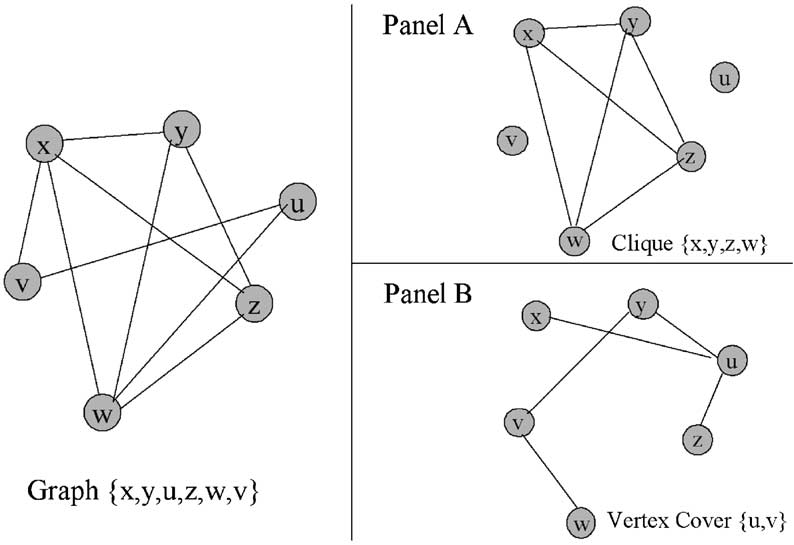

Design and Analysis of Algorithms: A Deep Dive into Vertex Cover, 3SAT, and Max Clique
Here we will expolore the above topics
Vertex Cover
A Vertex cover is a set of vertices (or nodes) in a graph such that every edge in the graph is incident to at least one vertex in the vertex cover.
More formally, given an undirected graph G = (V, E), a vertex cover is a subset of vertices C ⊆ V, such that for every edge (u, v) in E, at least one of u or v is in C. In other words, the vertices in the vertex cover "cover" all the edges in the graph.
The minimum vertex cover problem is an important problem in graph theory and computer science, where the goal is to find the smallest possible vertex cover for a given graph. This problem is known to be NP-hard, which means that it is computationally challenging to find the optimal solution in general, and it is often used as a basis for studying approximation algorithms and computational complexity.
Vertex covers have various applications in fields such as network design, optimization, and computer science algorithms. Finding a minimum vertex cover is a common problem in optimization and algorithm design, and many algorithms have been developed to approximate the minimum vertex cover efficiently.
Max Clique
In graph theory, a clique is a subset of vertices in an undirected graph such that every two distinct vertices in the clique are adjacent (connected by an edge) In tha above graph, set (x,y,z,w) all are adjacent to each other, hence it can be called as a clique of the graph.
Now there are two types of Max Clique, first in Maximum Click and Second one is Maximal Click
A maximal clique is a clique that cannot be extended by adding an adjacent vertex, meaning that if you add any more vertices to the subset, it will no longer be a clique.
In the above graph, set (x,y,z) can be called as a clique but not a max clique as when we add w, it is no longer maximal clique
Now Maximum Clique, on the other hand, a maximum clique is the largest clique in a graph. It is the clique with the maximum number of vertices among all cliques in the graph. The size of a clique is simply the number of vertices it contains.
The problem of finding the maximum clique in a graph is a well-known problem in graph theory and combinatorial optimization.
3-SAT
3-SAT is a specific type of Boolean satisfiability problem, a well-known problem in computer science and mathematical logic. In 3-SAT, you're given a Boolean formula in conjunctive normal form (CNF) where each clause consists of exactly three literals (variables or their negations) connected by logical OR operators. The goal is to determine if there is an assignment of truth values (true or false) to the variables that makes the entire formula true.
One clause is this (A OR B OR C), 3-SAT is a collection of 3 such clauses
For example, a 3-SAT problem might look like this:
(A OR B OR C) AND (NOT A OR NOT B OR C) AND (A OR B OR NOT C)
The question is whether there exists an assignment of true and false to variables A, B, and C that satisfies all these clauses simultaneously. 3-SAT is a well-studied problem in computational complexity theory, and its decision problem is NP-complete, meaning it's computationally challenging to find a satisfying assignment, and verifying one is relatively easy.